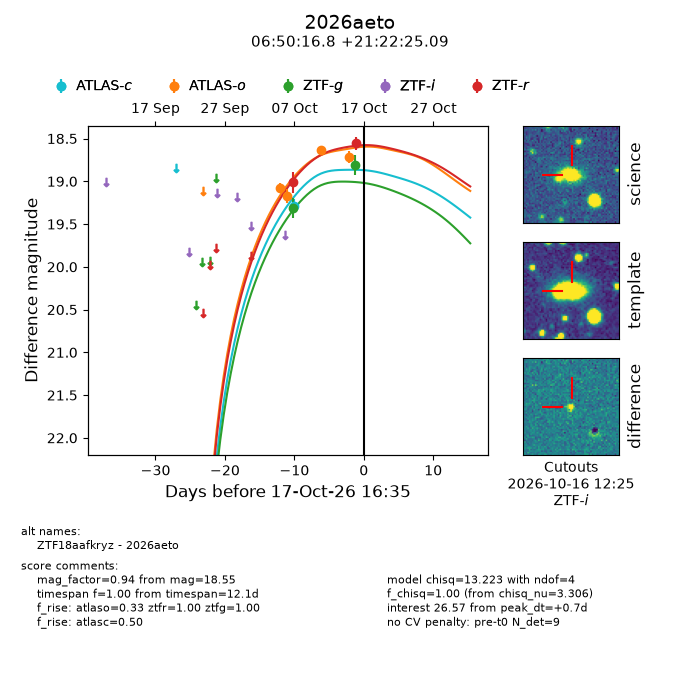
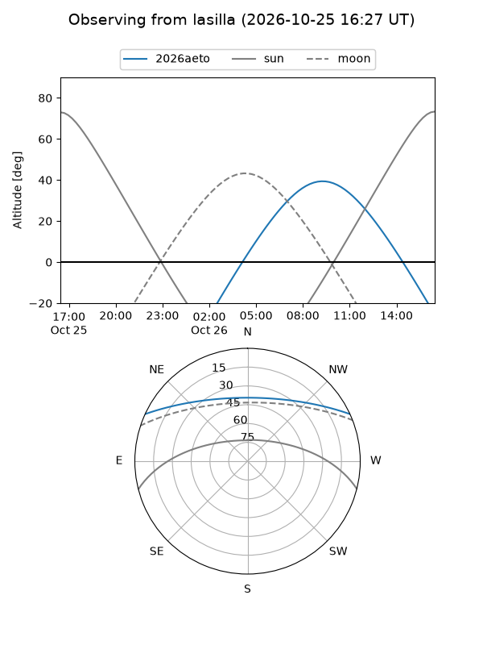
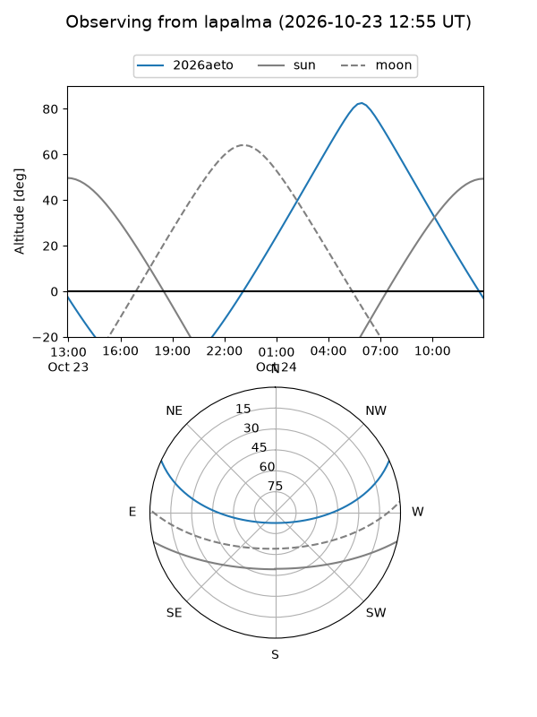
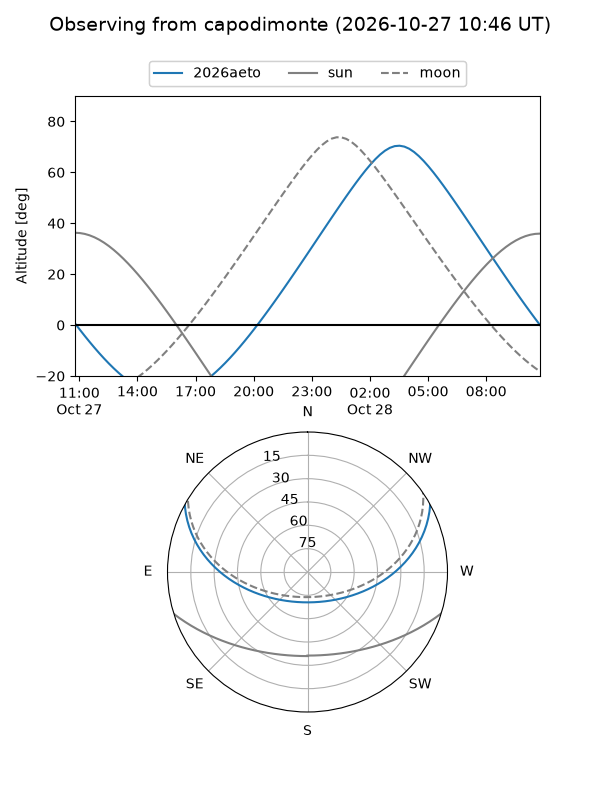
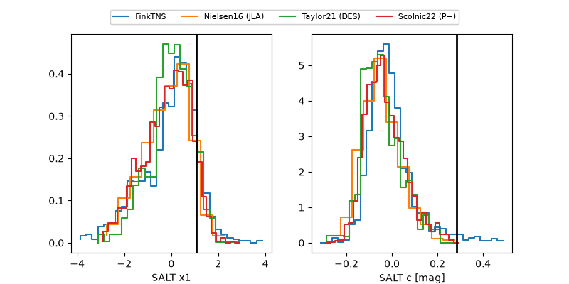

2026aeto
Target 2026aeto at 2026-10-17 16:36
Aliases and brokers:
FINK-ZTF: ztf.fink-portal.org/ZTF18aafkryz
Lasair-ZTF: lasair-ztf.lsst.ac.uk/objects/ZTF18aafkryz
ALeRCE-ZTF: alerce.online/object/ZTF18aafkryz
YSE-PZ: ziggy.ucolick.org/yse/transient_detail/2026aeto
TNS name: wis-tns.org/object/2026aeto
Direct TNS query: direct search
alt names
ZTF18aafkryz (ztf,fink_ztf)
2026aeto (tns,yse)
Coordinates:
equatorial (ra, dec) = 102.5699,+21.37363
equatorial (HMS+DMS) = 06:50:16.78,+21:22:25.09
galactic (l, b) = (193.6103,+9.32266)
Flags:
peak dt: +0.7
Photometry:
last atlasc=19.29, atlaso=18.71, ztfg=18.81, ztfr=18.55
1 atlasc, 4 atlaso, 2 ztfg, 2 ztfr detections
Lightcurve

Visibility



Additional plots
